Client Certificates
In this walkthrough, we will be looking at how we can use Client Certificates to authenticate with a server.
Try Without Certificate
We have hosted an application here.
Clicking that link takes you to the site over HTTPS, however our browser doesn’t recognize the Certificate Authority that signed the server’s certificate. Because the server’s certificate has been signed by an unrecognized Certificate Authority it will display a warning that we are dealing with a (currently) untrusted server. Their Certificate Authority [CA] is self-signed meaning it does not have a CA chain that resolves to one of the trusted CAs in our browser’s whitelist. The browser will only accept their server certificate once we add their self-signed CA certificate to its whitelist.
After we register their CA cert our browser will allow the server to authenticate itself using its certificate. In the most common TLS, One-Way TLS, only the server is required to present its certificate to form an encrypted connection. However, some servers also require a Client Certificate to authenticate any client trying to connect to it. When both the server and client are required to present certificates we call this Mutual Authentication or Two-Way TLS.
In order to form a TLS encrypted (HTTPS) connection with our web app both the server and client (you) must authenticate themselves with their respective certificates. As a final step we will need to add our own Client Certificate, signed by their CA, to our browser and present it whenever we want to access the site.
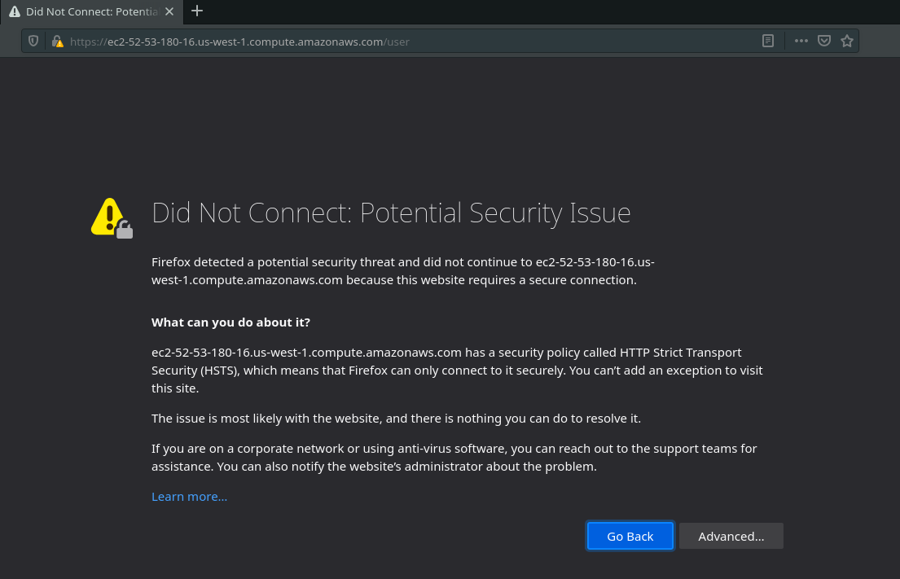
- We have two things to add to our browser to bypass these issues and use this web application:
- Add the server’s self-signed CA certificate to our browser’s CA whitelist
- Add our Client Certificate (signed by their CA)
Whitelist the Self-Signed CA Certificate
We first need to add the Certificate Authority certificate to our browser.
The Certificate Authority certificate will be generated and self-signed on the server that controls the web application. There are many publicly trusted root Certificate Authorities that browsers come pre-installed with in their whitelist. When working with a self-signing CA you must contact them to get its CA certificate and install it manually in your browser.
This sample web app and the Certificate Authority are controlled by LaunchCode. To simplify gaining access to the CA certificate we have shared it as a file named ca.crt in the following s3 bucket: s3://launchcode-gisdevops-cert-authority/certs/. This bucket also contains the Client Certificate we will be using in the next step.
You can view the shared certificates with the following command: aws s3 ls s3://launchcode-gisdevops-cert-authority/certs/.
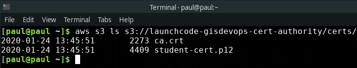
Go ahead and cp both of these files to your local machine: aws s3 cp --recursive s3://launchcode-gisdevops-cert-authority/certs/ ~/Downloads/certs this command will copy over both files to a folder named certs/ in your Downloads/ directory for easy access.
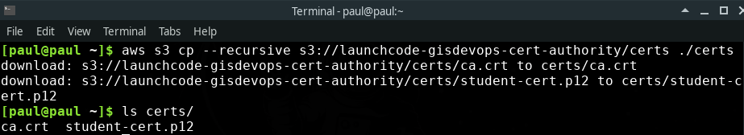
Now that we have the certificates locally we can add them to our browser. Let’s add the CA certificate first.
Our examples will use Firefox as the browser, however the process for adding a Certificate Authority and a Client Certificate should be similar across all major browsers.
We will need to enter the Firefox Privacy & Security preferences console. You can access this page manually or by entering about:preferences#privacy into the URL bar. This will take you to a page that looks like this:
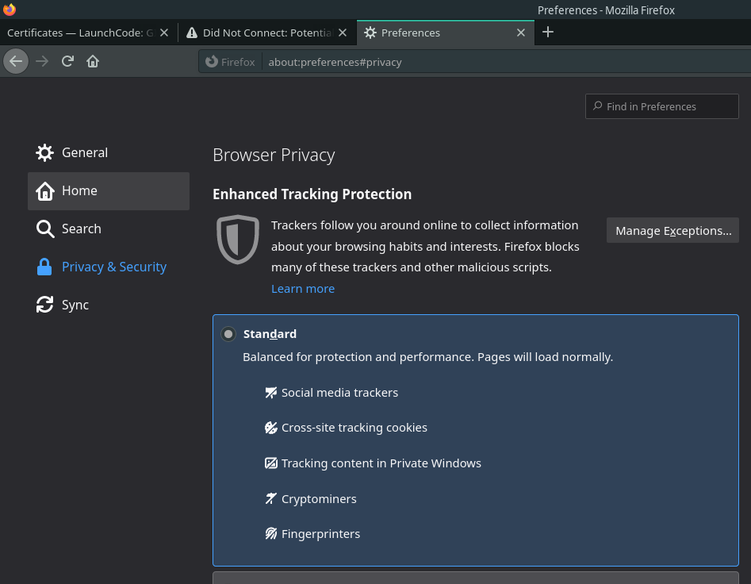
At the bottom of this page you will find the Certificates section:
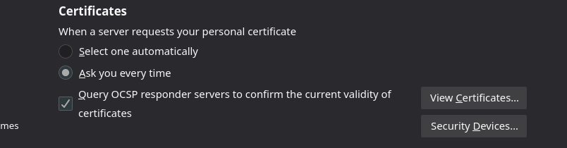
Click the View Certificates... button which will lead to a pop up window like this:
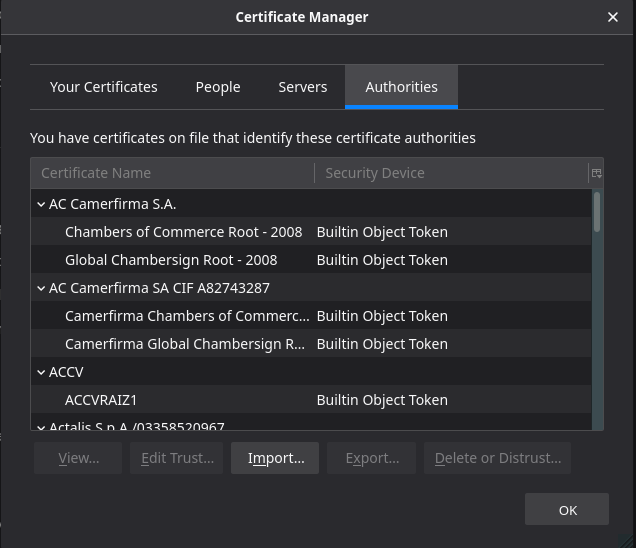
While writing this walkthrough my browser defaulted to showing the Authorities tab, which coincidentally is where we need to add our Certificate Authority certificate ca.crt.
Click the Import... button to import the Certificate Authority certificate we downloaded earlier. From here navigate to your Downloads/certs folder and select the ca.crt file.
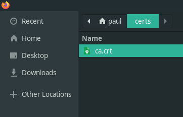
Click Open and another box will ask you what this Certificate Authority can do in your browser. Make sure to select Trust this CA to identify websites.
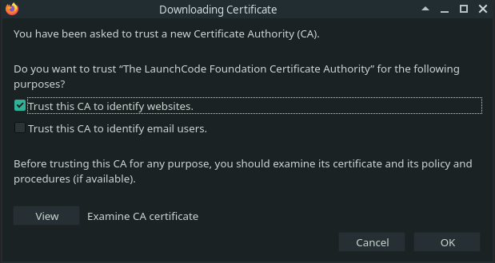
Finally click OK. The window asked specifically if we want to trust The LaunchCode Foundation Certificate Authority, and should have added an entry to your Authorities tab. It should look something like this:
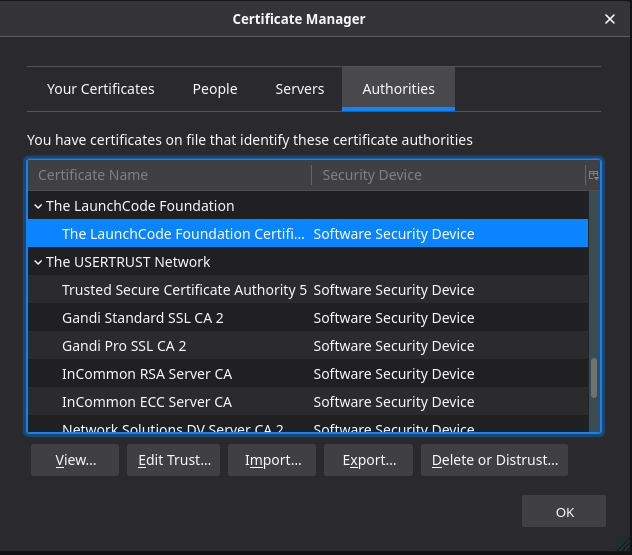
Note
You can click on the CA entry to view the certificate details
That’s it we have added the new Certificate Authority certificate! In the next step we will add our Client Certificate.
Add Client Certificate
We downloaded an additional file, a Client Certificate, earlier that will also need to be added to the browser. We will use this certificate to enable Two-Way TLS. Just like in the previous step you would normally be required to contact the CA and request your Client Certificate. To keep things simple, we will all be using the same certificate which defines the general role of a student in the GIS DevOps class.
In the real world you may encounter a sytem that requires granular control over the clients that can access its services. In these cases Client Certificates are issued on a per-client basis to grant uniquely identifiable access. This allows for clients to be individually monitored and their access to be revoked as necessary.
In Firefox open the Certificate Manager again, and this time navigate to the Your Certificates tab.
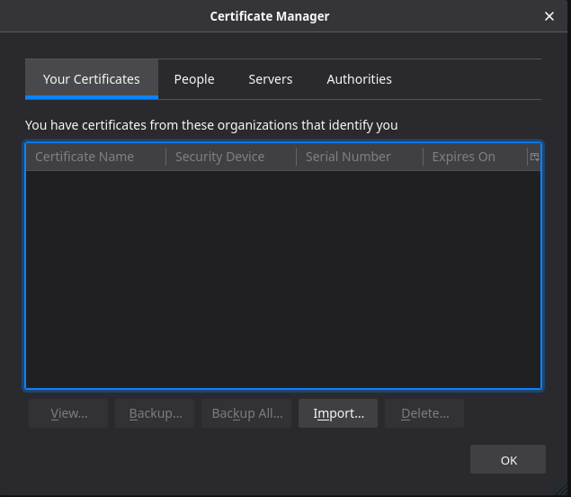
As you can see my certificates for this browser are currently empty. I want to add my personal identification certificate that we downloaded earlier from S3 here. Again click Import. Select the student-cert.p12 certificate file under Downloads/certs and click Open.
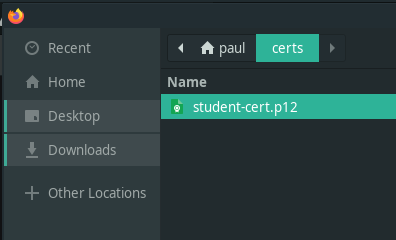
When the Client Certificate was created it was encrypted with a password to prevent unauthorized usage. In order to install this certificate we will need to provide that password. This is again information that would come from the Certificate Authority that issued the Client Certificate.
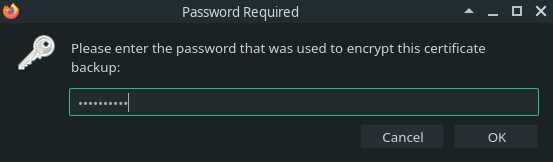
We encrypted this certificate with the password: launchcode so enter that in the prompt. Upon completion you should see your newly added certificate:
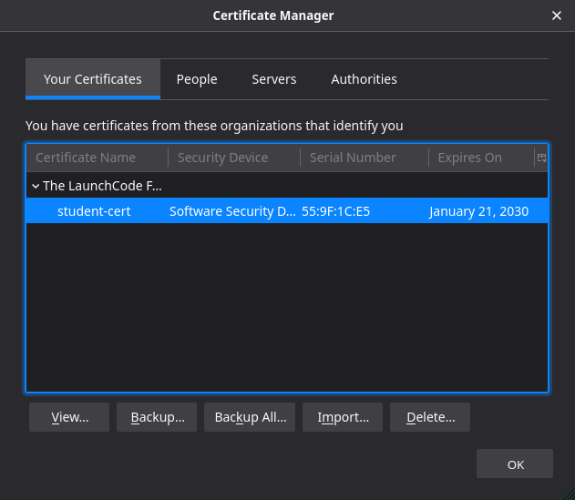
That’s it we just added our Client Certificate!
Try it Out
Let’s navigate back to the link we looked at earlier.
Hint
You may need to close your browser and reopen it, or you can open a private browser to completely refresh the cache. Ctrl+Shift+r may work as well. Try these out if you don’t see the alert about identifying yourself.
Behind the scenes the server is the first to send its certificate. Because our browser now recognizes the CA that signed the server’s certificate it accepts it without presenting the warning message that we saw earlier. The server then issues a request for us to present our Client Certificate. Once we send our Client Certificate the Mutual Authentication handshake is completed to form a secure connection.
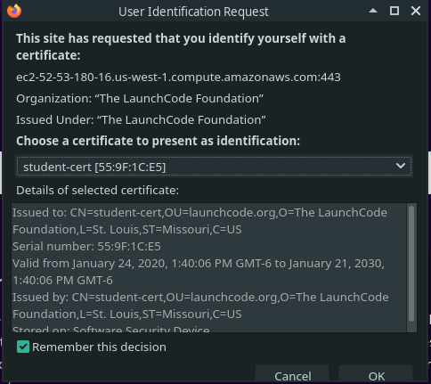
This prompt has a dropdown to support users that have many Client Certificates. The cert we just added should be found as an option in the drop down box. Select that cert and click OK.
Now we see the webapp!
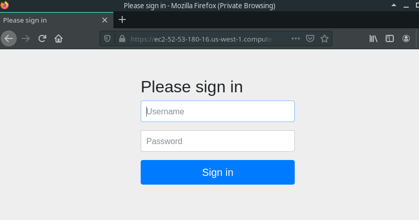
Multi-Factor Authentication
Why is the webapp asking us to login if we have already authenticated ourselves using the Client Certificate? This is an example of a multi-factor authentication strategy. The Client Certificate serves to authenticate and form the secure connection with the server. The Client Certificate is an example of an Ownership Factor of authentication. The login view presents a second, Knowledge, factor of authentication. Using two-factor authentication hardens the security of a system by removing a single point of failure. An attacker would need to gain access to both the certificate (Owned factor) and credentials (Known factor) to infiltrate the system.
To access the protected /user route you can enter the following credentials (Knowledge factor). The username: launchcode-devops and password: launchcode which will authorize you to access the final view!
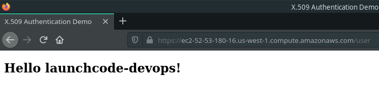
Optional
If you would like to see how a Certificate Authority works behind the scenes you can view the source code at the GitHub repo